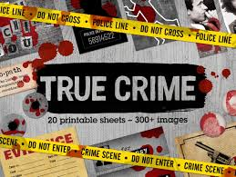

Why True Crime?
True crime isn’t just about shock value, when researched responsibly, it can highlight patterns, systems, and the importance of victims being remembered with respect. There is a lot behind why these crimes happen, and we often see that it starts from childhood, fear, or drastic negative changes in life. So what causes them to convert their thoughts into reality? That is what we want to find out.

Case-Study Checklist
- Background
- Where and when it happened
- Key people involved
- What made it unusual
- Investigation
- Evidence types (witness, digital, forensic)
- Timeline consistency
- What changed the outcome
- Reflection
- Ethical storytelling (focus on victims)
- What the public learned
- How prevention could improve
True Crime Story Teller Bailey Sarian
Bailey Sarian is a great true crime story teller. She tells stories about what happened, who was involved, and the outcome of the court trials while doing her makeup